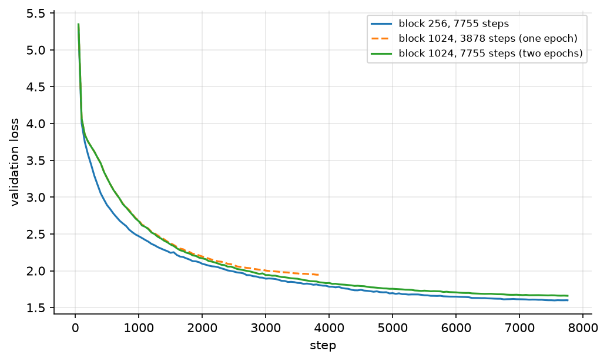
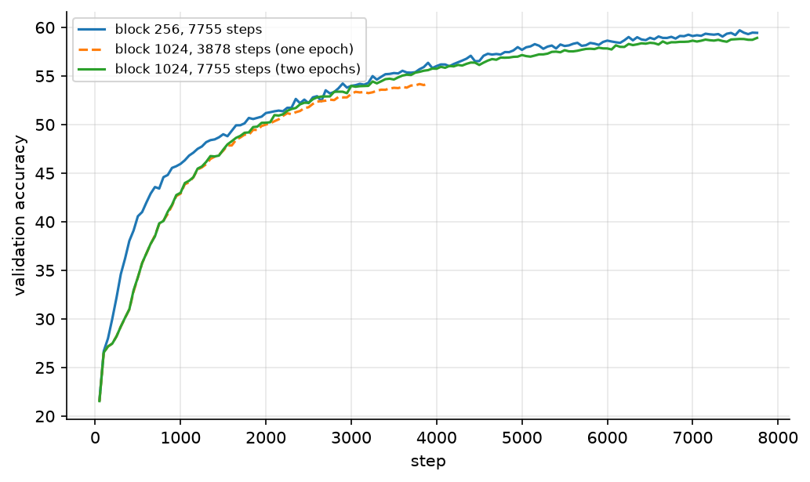
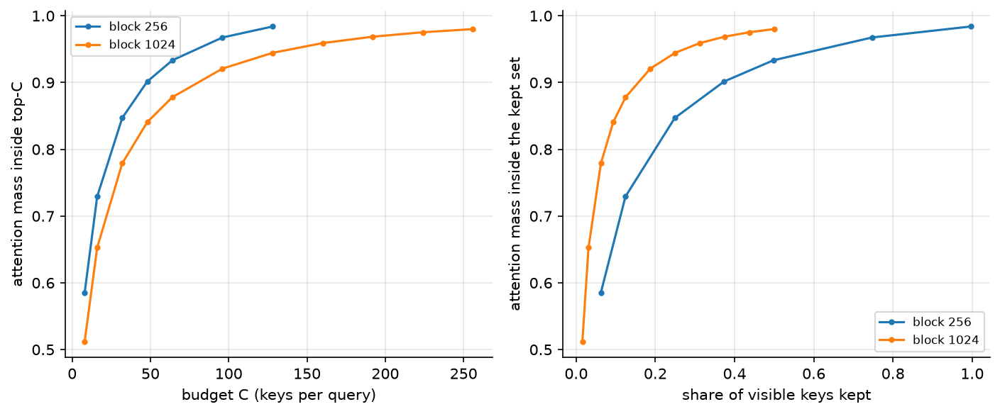
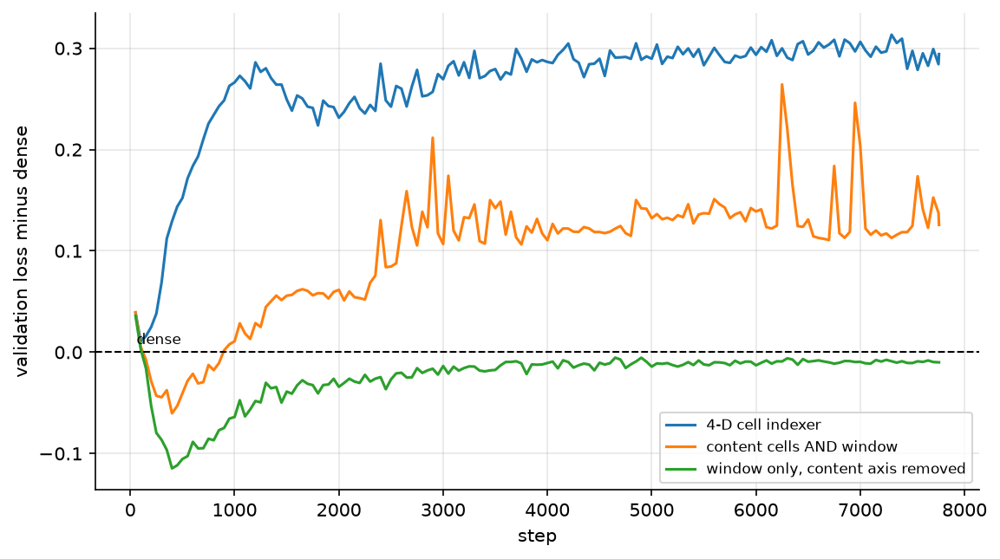
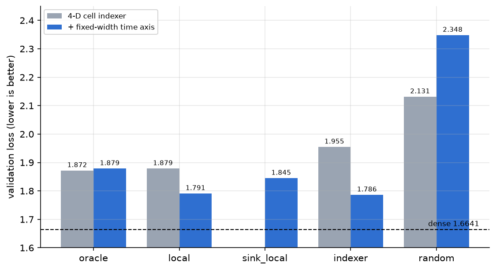
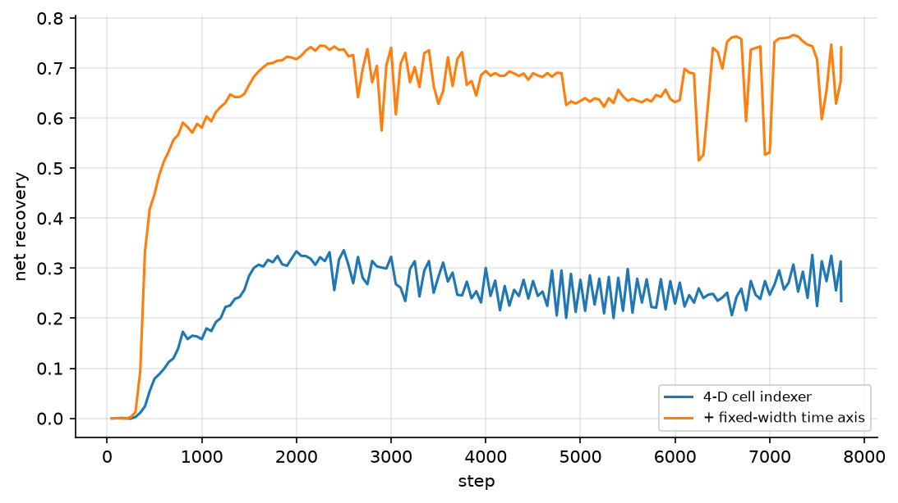

我给 SCA-L Duo 补了三组实验。block 1024 上长上下文本身不是瓶颈，索引器才是；同预算的掩码消融显示训练好的索引器输给一个免费的滑动窗口 1.5 个百分点，根因是 4 维格点在 1024 上只有 2 到 9 格的时间分辨率、根本表达不出“看最近的几个”；补上一根固定宽度的时间轴之后，读取量压到 37.5%，代价从 5.6 个百分点降到 2.6 个百分点。
背景
我们提出了 SCA-L Duo，把 SCA-L 的索引器接到 MLA 压缩过的 KV Cache 上，跑完一个 epoch 的密度扫描，拿到“保留 50% 换 5.0 个准确率点”。那个数一直让我不舒服。5 个点是“能接受”还是“就这样了”，完全取决于其中多少是索引器的锅、多少只是砍掉一半上下文的锅。这一篇就是把这两件事分开。
过程
语料还是 TinyStories + byte-level BPE（vocab 8192），切片 262144000 字节，训练 63535606 token、验证 983578 token。在 AutoDL 上租了一张 vGPU-48G（系统里显示成 48GB 的 3090），96 核。主力是 common.train 一个入口，block、batch、步数按实验换，其余固定：emb 512、6 层、8 头、MLA latent 64、索引器 latent 4、chunk_size 0.5、code_std 0.30、--aux-mode rate --aux-beta 0.0 --detach-indexer --indexer-lr-scale 0.1、seed 1337。block 1024 上一个 epoch 是 3877 步，batch 16 就是 16384 token/步。
后面所有“block 1024”的对照，稠密基线、旧索引器、新索引器三者都是同一个 seed、同一个 block/batch、同一份 7755 步的余弦调度，所以喂进去的 batch 序列逐个相同，可以按步对齐。
长上下文
先验证最自然的那个猜想：block 256 太短，上下文长一点才看得出稀疏的价值。三个稠密基线，前两个匹配 token（63.5M，正好一个 epoch），后两个匹配步数：
| block | batch | 步数 | 见到的 token | 验证 loss | 验证准确率 |
|---|---|---|---|---|---|
| 256 | 32 | 7755 | 63.5M | 1.6003 | 59.39% |
| 1024 | 16 | 3878 | 63.5M | 1.9546 | 53.94% |
| 1024 | 16 | 7755 | 127.1M | 1.6641 | 58.76% |
匹配 token 时 1024 落后 0.354，匹配步数时只落后 0.064，0.63 个准确率点。**原来那 0.354 里有 82% 是欠训。**但反过来也得说清楚：1024 是吃掉两倍 token 才追到这个位置的，按 token 算它仍然明显更差。


两条曲线说的是一件事：block 1024 要看到两倍的数据才勉强追上 block 256，而在 3878 步那个位置它还差得很远。我一开始以为是余弦调度没退完火，但 7755 步跑完差距只剩 0.064，所以主要因素确实是步数不够，不是长度本身。
光看 loss 还分不清是“长上下文没用”还是“这个语料没用”，所以我又量了一次路由的天花板：把每个 Q 的可见 K 按注意力权重排序，取前 C 个的权重和。这是任何固定预算路由器的上界，因为它作弊看了答案。

左图按预算 C 看，1024 在每个 C 上都不如 256（C=128 时 0.9445 对 0.9840）。右图换成“保留占可见 K 的比例”，结论整个反过来：
| 保留比例 | block 256 | block 1024 |
|---|---|---|
| 6.2% | C=8，0.558 | C=32，0.764 |
| 12.5% | C=16，0.691 | C=64，0.861 |
| 25% | C=32，0.796 | C=128，0.926 |
| 49.8% | C=64，0.867 | C=256，0.959 |
同一个预算占比下，1024 的天花板高 9 到 21 个百分点，而且优势保持到实际工作点（50%）。
我猜是因为这个语料是独立短篇拼起来的，一篇大约 250 token。block 256 的窗口差不多正好是一篇故事，可见的 128 个 K 几乎全都“有关”，路由器根本没有能扔的东西；block 1024 跨了四篇，一半以上的 K 是可证明无关的，路由器终于有结构可挖。也就是说长上下文制造出来的正是“无关性”本身。
那时候我以为这就解释了稀疏的价值，于是把稀疏的那一半也跑了：block 1024、密度设定 0.50、同样 7755 步。结果是它落后自己的稠密对照 5.60 个准确率点（53.16% 对 58.76%），而 block 256 上同一档密度落后 5.03 个点。
**天花板抬高了，精度上的代价一点没少。**所以长度不是答案，剩下的问题变成“选哪一半”。
掩码消融
要回答“选哪一半”，就把候选集合的数量固定成索引器自己的 per-Q 候选数，只换选哪些，然后重跑整个验证集。这个做法能干净地绕开预算问题——所有模式的候选数逐个 Q 都一样。
| 掩码 | 4 维格点索引器 | 与索引器的重合 |
|---|---|---|
| 全部 K（稠密） | 1.6604 / 58.92% | — |
| oracle top-C（作弊） | 1.8717 / 54.75% | 0.632 |
| local（最近 C 个 K） | 1.8786 / 54.55% | 0.654 |
| sink_local（第 0 个 K + 最近 C-1 个） | 1.8909 / 54.31% | 0.652 |
| 索引器（实测） | 1.9546 / 53.05% | 1.000 |
| random | 2.1314 / 49.86% | 0.591 |
（都是在各自最终 checkpoint 上单次评估，稠密那一行也是单次。）
训练好的索引器，输给一个零训练的滑动窗口 0.076 个 loss、1.50 个准确率点。
而且它和滑窗的重合率只有 0.654，随机是 0.591——它几乎不偏向近因。两件事同时被这行数说掉了：这个语料上的好掩码就是“看最近的一段”，以及格子、码本、密度控制器加起来，净价值是负的。
顺手把失分拆开。random 是零路由能力的下界，oracle 是作弊上界：
- 索引器已经拿到 random 到 oracle 之间 68.1% 的空间
- 剩下的 0.083 里，滑窗免费拿走 91.7%
所以“索引器还不够聪明”这个说法在数据上站不住——它再聪明也只能多拿 0.007。真正贵的是“只读一半”这件事本身。我当时的第一反应是去改架构（比如把窗口做成下界、和内容格点取并集），现在看那是错的：既然正确解就是滑窗，问题不是掩码的形状，是索引器压根没学会滑窗。
尺子失效
上面那个 oracle 一开始是当上界用的，结果它自己先翻车了。
加了时间轴的模型（下一节）上，oracle 是 1.8786，训练好的索引器是 1.7861——作弊的比不作弊的差 0.09。原因不难发现：模型的稠密注意力会长成“它读得到的东西”的形状。新版索引器和滑窗重合 0.922，此时按注意力 top-C 去选，等于喂给模型一堆它没见过的 K（重合率只有 0.796）。
也就是说 oracle top-C 只在“模型还没适应受限掩码”的时候才成立。我前面几轮拿它当上界、算出“索引器离上限还差 5 倍”，是拿一把坏尺子量的。这一条我记下来，免得以后再踩。
时间分辨率
既然好掩码就是滑窗，下一个问题就很具体了：索引器为什么学不会滑窗。
我一开始猜它的输入缺时间编码，于是写了个探针，量 z 里面还剩多少位置信息（线性读出到 token 位置的 ）：
| 层 | （64 维输入） | （4 维码） | |
|---|---|---|---|
| 0 | 0.994 | 0.935 | 0.467 |
| 2 | 0.994 | 0.848 | 0.766 |
| 3 | 0.995 | 0.885 | 0.878 |
| 4 | 0.990 | 0.813 | 0.806 |
| 1 | 0.992 | 0.544 | 0.146 |
| 5 | 0.974 | 0.382 | 0.530 |
**位置信息一直在。**压到 4 维之后还有 0.81 到 0.94，而且有单轴把位置编码得极干净——和位置的相关系数 0.88 到 0.94。所以“emb 缺时间编码”是错的。
缺的是分辨率。判据是 ，每个轴放行的是“ 个格子”的对称区间，于是位置轴能表达的最紧窗口就是 2 个格子宽。我数了每个轴在这条 1024 序列上到底用到多少格子：
| 层 | 最好那根轴 | 与位置的相关系数 | 格子数 | 该轴隐含的窗口 |
|---|---|---|---|---|
| 2 | 1 | 0.906 | 6 | 526 token |
| 3 | 1 | 0.918 | 8 | 530 token |
| 4 | 3 | 0.895 | 6 | 708 token |
| 5 | 1 | 0.287 | 9 | 1882 token |
| 4 | 2 | -0.069 | 4 | 19300 token |
最好那根轴隐含 526 token 的窗口，而预算要的是 224，差了 2.3 倍；其余轴上是 1200 到 19000 token，等于没有分辨率。这个 224 是这么来的：平均候选 227 个、平均可见 K 512.5 个，一个 Q 想靠“最近的一段”花掉这份预算，窗长就得在 224 上下。
这是结构性的，不是调参问题：格子宽度等于 ，而 归密度控制器管，只要密度掉到设定值以下它就把格子重新变粗。想要细分辨率就得接受低密度，两者直接对冲。
于是我加了一根不吃控制器的轴：--pos-chunk 128，格子宽度固定 128 token， 就是查询后面 256 token 的硬窗口，内容轴再在窗内细化。
1 | def position_cells(self, sequence, device): |
同一份配置、同一个 seed、同样 7755 步重训了一遍：



| 掩码 | 4 维格点 | 加固定时间轴 |
|---|---|---|
| 全部 K（稠密） | 1.6604 / 58.92% | 同左 |
| 索引器（实测） | 1.9546 / 53.05% | 1.7861 / 56.41% |
| local 滑窗 | 1.8786 / 54.55% | 1.7911 / 56.32% |
| sink_local | 1.8909 / 54.31% | 1.8448 / 55.20% |
| oracle top-C | 1.8717 / 54.75% | 1.8786 / 54.72% |
| random | 2.1314 / 49.86% | 2.3481 / 46.58% |
| 与滑窗的重合率 | 0.654 | 0.922 |
三件事同时变了：
- 相对稠密的代价从 5.6 个点降到 2.6 个点，loss gap 从 0.294 到 0.126
- 索引器不再输给免费滑窗：从输 1.50 个准确率点、0.076 个 loss，变成赢 0.09 个点、0.005 个 loss。这个优势小到我不打算当结论，但方向翻了；和滑窗的重合率从 0.654 涨到 0.922，它终于学会看最近的一段了
- 读取量反而更少：平均候选从 230.5 降到 187.4，占可见 K 的比例从 44.3% 降到 37.5%
第一张图是这个过程最清楚的证据：旧索引器（蓝）在 1000 步左右就卡在 +0.28 到 +0.30 不动了；加了时间轴的那条（橙）在 3000 步之后平在 +0.11 到 +0.14。少了三分之一以上的惩罚，而且是收敛了，不是还在往下走。净找回同步数从 0.28 提到 0.70。
我猜机制就是：格子判据只管“在不在同一片邻域”，它没有“越近越好”的概念，所以在 256 token 的窗内它基本上是任意挑掉 26% 的 K，而丢掉的恰好包含最近的 token。这大概就是为什么它在精度上只比纯滑窗好 0.09 个点——内容轴在窗内几乎没提供增量。
缺点
只有一个 seed。0.57 个点那种量级（block 256 和 1024 的稀疏代价）比验证噪声大，但低于 run-to-run 方差，我不把它当结论。
掩码消融只有密度 0.50 这一个工作点。再稀疏下去滑窗未必还是好启发式，索引器有可能在很低预算上才有价值，这一轮没测。
还是稠密掩码，省的是“该算多少”而不是“真的跑了多久”，这一点和上一篇一样没动。
语料是独立短篇拼起来的，长程依赖基本不存在，所以“长上下文没用”只对这个语料成立。换语料它就能被推翻，这也是下面第一件事。
新版读取量比旧版少（37.5% 对 44.3%），所以“旧版 vs 新版”不是严格同预算。两者的平均密度都在 0.51 左右，但时间轴在 256 token 处封顶，长前缀的 Q 拿不到更多候选——平均候选数会掉就是这个原因。
未来规划
下一步是换语料，不是加长序列。理由很直接：这一轮所有负面结论都建立在一个前提上——TinyStories 每篇约 250 token，块内没有真正的长程依赖。这个前提是从现象反推的，没被独立验证过。换语料是唯一能检验它的办法。
但光换语料不够。索引器的投影现在只被 rate-distortion 辅助目标训练（--detach-indexer 加 --aux-beta 0.0），它对“选得对不对”完全没有信号，位置的答案就是它自己收敛出来的。所以同一轮要开 --aux-mode kl（不 detach）或者 --ste-mask，让路由吃到语言建模的梯度。
我打算明天做这件事。
结语
附代码可复现。tools/probe_indexer_position.py 是那个位置探针，tools/eval_mask_ablation.py 是掩码消融，TinyStories 和 BPE 太大没有打包。
这一轮的结论和我的预期是反的。我本来想证明“序列更长 SCA-L 更强”，结果证明的是：索引器缺的是一根时间轴，而它省下来的价值来自预算，不是上下文。
2026/10/3更新：
上面「时间分辨率」那一节里有一句话要撤回：我写了“索引器不再输给免费滑窗”，还写了“内容轴在窗内几乎没提供增量”。
那个结论是从“把纯窗口替换进已训练模型”测出来的（0.005 个 loss），属于分布外操作，不能算数。于是我补了对照。
新加的开关是 --pos-only：内容格点整个摘掉，密度控制器也摘掉，掩码只剩“最近 个 token”。
也就是说它就是一个滑动窗口模型，seed、步数、block、batch 全部和 --pos-chunk 那版逐字一致。
绿线是这次新跑的。四条曲线现在在同一张图上：
| 模型 | 读到的 K 占比 | 验证 loss | 验证准确率 |
|---|---|---|---|
| 稠密（全部 K） | 100% | 1.6641 | 58.76% |
| 4 维格点索引器 | 44.3% | 1.9566 | 53.16% |
| 内容格点 ∧ 窗口 | 37.5% | 1.7971 | 56.20% |
| 纯窗口（摘掉内容轴） | 43.7% | 1.6544 | 58.67% |
（最后 10 次验证的均值。）
结论是彻底反的：内容轴不是“贡献很小”，是负的。
纯窗口比内容格点 ∧ 窗口好 0.1427 个 loss、2.47 个准确率点，而且它读得更多（43.7% 对 37.5%）。
这个方向对内容格点版是有利的偏置——它多读了 16.5% 的 K 还是输 2.47 个点，因为这是单侧判定，结论反而更硬。
更扎眼的是表格的第一行和最后一行：读最近 256 个 token，在 loss 上比读全部 1024 个还好 0.0097，准确率基本打平（58.67% 对 58.76%）。
在这个语料上长程注意力不但没用，还略微有害。
顺带再看一眼那个自创指标：
| 模型 | 密度 | recall | 净找回 |
|---|---|---|---|
| 纯窗口 | 0.596 | 0.9763 | 0.9422 |
一个完全没有路由能力的模型把净找回刷到了 0.94。原因不难发现：recall 的 teacher 是模型自己的稠密注意力，而这个模型的注意力只见过窗口，teacher 本身就长成了窗口的形状。
这是指标自指最裸的一次演示，也又一次说明注意力质量类的指标在受限掩码训练的模型上会系统性偏乐观。
所以现在的判断是：**SCA-L Duo 那个索引器在 TinyStories 上是负资产。**格子、码本、密度控制器、rate-distortion 辅助目标加起来，打不过一行 rel < 256。
这不等于“学出来的路由一定没用”，但它把问题问反了：在没有长程依赖的数据上，任何在窗内做内容筛选的动作都在减分，因为窗内每一份预算都该给最近的 token。要检验索引器有没有价值只能换语料，也就是前面说的下一步。